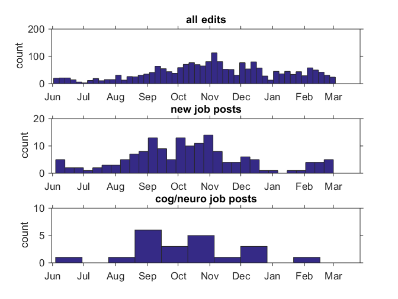

file='psychjobsearchwiki_2014-2015.txt';
fid=fopen(file);
data=textscan(fid,'%u%s%{MM/dd/yy}D%s','headerlines',1,'delimiter','\t');
fclose(fid);
figure;
subplot(3,1,1);
hist(datenum(data{3}),50)
datetick('x','mmm','keeplimits')
set(gca,'tickdir','out')
ylabel('count')
title('all edits')
com=lower(data{4});
terms={'job' 'professor' 'university' 'college' 'add' 'position'};
for t=1:length(terms)
job(t).ix=~cellfun('isempty',(strfind(com,terms{t})));
end
termsno={'interview' 'accept' 'fill' 'full' 'reject' 'email' 'postdoc' 'edit' ...
'fix' 'reference' 'cross' 'correct' 'offer' 'delete' 'remove' 'update'};
for t=1:length(termsno)
jobno(t).ix=~cellfun('isempty',(strfind(com,termsno{t})));
end
jobix=any([job.ix],2) & ~any([jobno.ix],2);
subplot(3,1,2);
hist(datenum(data{3}(jobix)),30)
datetick('x','mmm','keeplimits')
set(gca,'tickdir','out')
ylabel('count')
title('new job posts')
neuroix=jobix & (~cellfun('isempty',(strfind(com,'neuro'))) | ~cellfun('isempty',(strfind(com,'cog'))));
subplot(3,1,3);
hist(datenum(data{3}(neuroix)),10)
datetick('x','mmm','keeplimits')
set(gca,'tickdir','out')
ylabel('count')
title('cog/neuro job posts')
